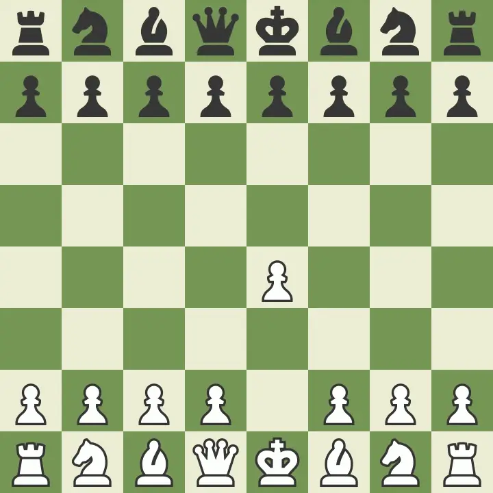
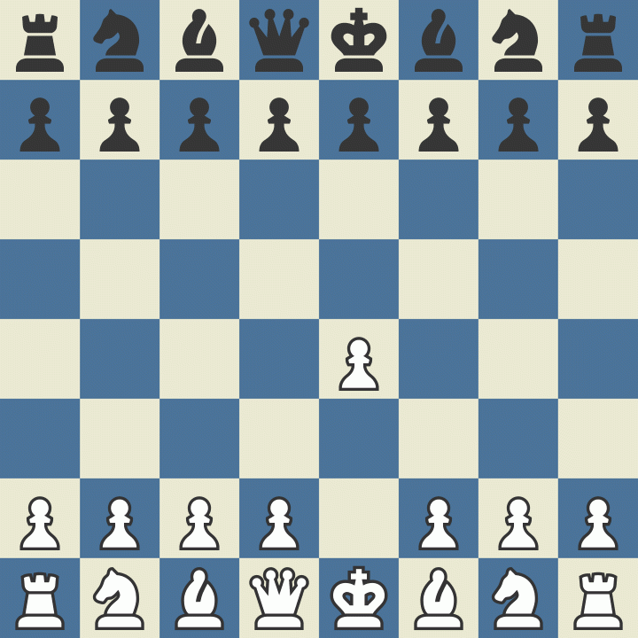
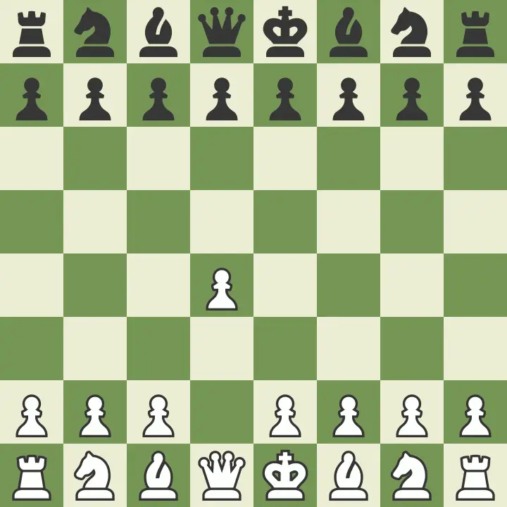

Popular Chess Openings
1. Ruy Lopez
1.e4 e5 2.Nf3 Nc6 3.Bb5
A classic opening focusing on pressure on the knight and central control.
2. Sicilian Defense
1.e4 c5
A popular and aggressive response to 1.e4 aiming for counterplay.
3. Queen's Gambit

1.d4 d5 2.c4
White offers a pawn to gain central control. Very popular at all levels.
4. King's Indian Defense
1.d4 Nf6 2.c4 g6 3.Nc3 Bg7
A hypermodern defense where Black lets White take the center first.